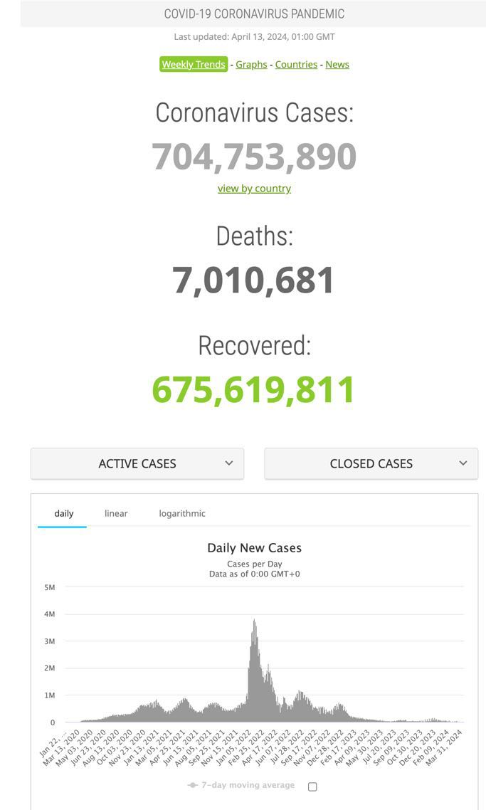
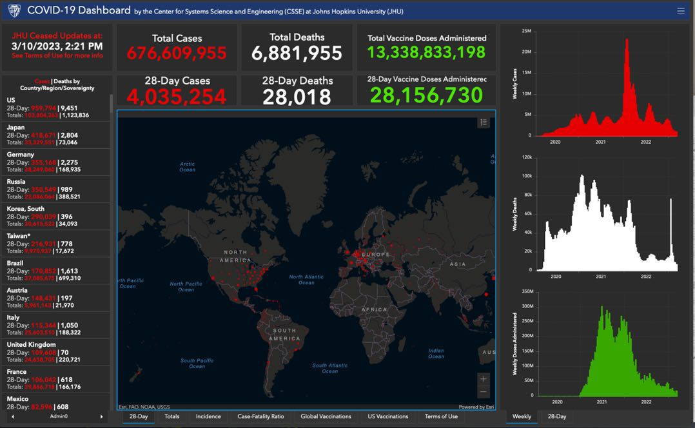
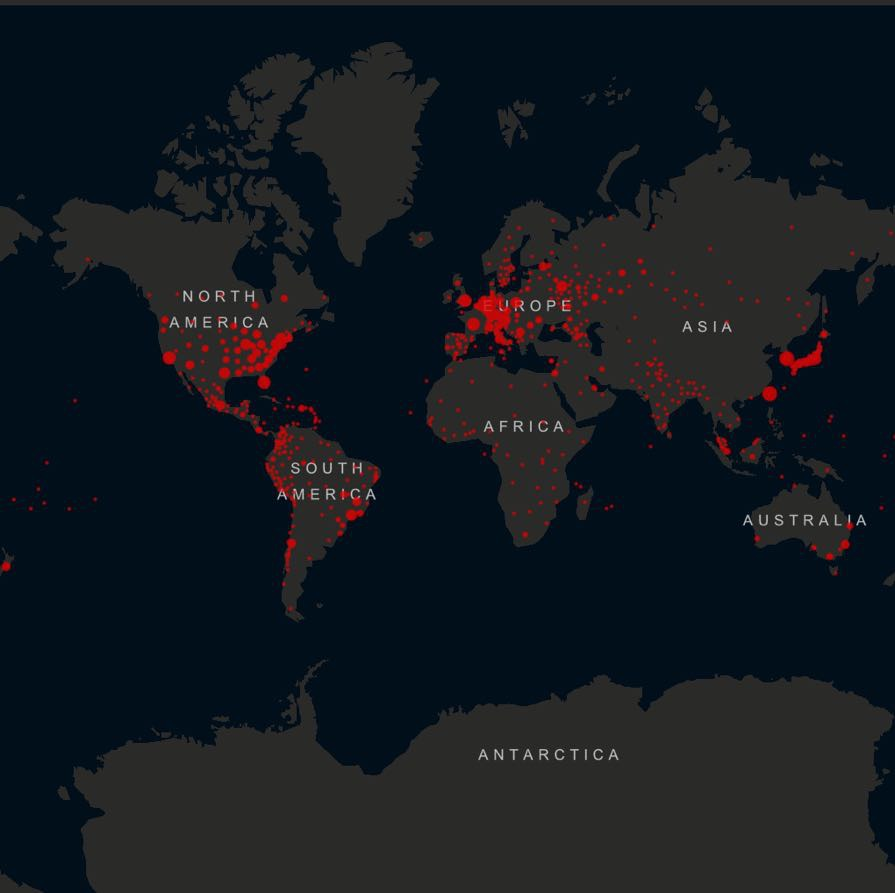
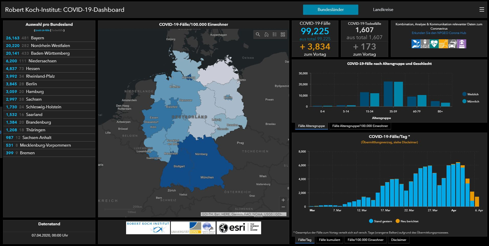

Les tableaux de bord du COVID, ou pourquoi le plus simple a gagné
Début 2020, le monde entier se pose chaque matin la même question : « où en est l'épidémie ? ». Deux sites se proposent d'y répondre. D'un côté, le tableau de bord de la Johns Hopkins University (JHU) : une université prestigieuse, des scientifiques de premier plan, le soutien des grandes organisations et des médias — le Time ira jusqu'à classer la responsable du projet parmi les 100 personnes les plus influentes du monde. De l'autre, Worldometer, un site au pedigree si discret que CNN le qualifie de « mystérieux site web semant la confusion ». Pourtant si l'on se penche sur les chiffres, le verdict est sans appel : en avril 2020, Worldometer est devenu le 28e site le plus consulté du web mondial, un trafic multiplié par 370 en un an, et un écart d'un facteur dix avec le site de la JHU. Le grand public — et certains gouvernements — ont choisi le site sans prestige. Pourquoi ?
Une question, un graphique
Qu'offrait Worldometer de plus ? Rien. C'est précisément le point : ils ont offert moins. En haut de page, un seul graphique — le nombre de cas quotidiens depuis le début de l'épidémie. Il répond exactement à la question que le visiteur vient poser : « où en sommes-nous ? ». Les couleurs sont réduites au minimum, une touche de vert pour les guérisons. En dessous, un tableau par pays qui sert à la fois d'instrument de mesure et de navigation. Rien d'astucieux, rien de spectaculaire — et rien qui s'interpose entre la question et sa réponse.

C'est la même discipline que pour toute analyse : on part d'une question, pas des données disponibles. Worldometer a construit une page ; la JHU a construit une vitrine.
Un tableau de bord ne se juge pas à ce qu'il montre, mais à la question à laquelle il répond.
Le tableau de bord qui voulait trop dire
Le tableau de bord de la JHU, lui, affiche trois catégories de données en haut, trois autres à droite, et deux cartes au centre. L'information que tout le monde vient chercher — l'évolution des cas — est reléguée dans un coin, en concurrence avec un suivi de la vaccination qui aurait mérité sa propre page. Trois graphiques empilés portent trois couleurs et trois échelles différentes : 25 millions de cas, 120 000 morts, 350 millions de doses. Un facteur 3 000 entre deux courbes voisines — une gymnastique que le lecteur doit faire, ou pas. Je pense qu'environ 99% des personnes confrontées à un tel amas de statistiques ne comprend pas vraiment ce qu'on lui présente.

Les couleurs racontent la même histoire confuse et brouillonne : du rouge pour les cas, du vert pour les vaccinations, du blanc pour les morts. Outre le fait que le rouge et le vert s'inversent dans certaines cultures, environ 300 millions de personnes distinguent mal ces deux couleurs précisément. Quant au blanc pour les morts, il ne signifie tout simplement rien. Quand l'usage de la couleur n'obéit à aucune règle, c'est généralement que personne ne s'est posé la question.
Les cartes, ou la forme contre le fond
Le choix le plus discutable est au centre : la carte mondiale, servie par défaut en projection de Mercator. Le Groenland, le Canada et la Russie — environ 2 % de la population mondiale — occupent le tiers supérieur de l'écran, l'Antarctique le tiers inférieur. Des points rouges s'y superposent jusqu'à l'illisible. Et surtout, une carte est statique : elle ne dit rien de la situation d'hier ni d'il y a un mois, alors que la seule question qui compte est de savoir si l'épidémie s'améliore ou s'aggrave.

L'argument n'est pas que les cartes sont toujours mauvaises. L'institut Robert Koch, en Allemagne, en a fait bon usage : un découpage administratif homogène, peu d'indicateurs, des couleurs cohérentes — à l'échelle d'un pays, la carte fonctionne.
À l'échelle du monde, avec des entités allant du Vatican à la Russie, elle décore plus qu'elle n'informe. L'évolution du site de la JHU est d'ailleurs un aveu d'échec : parti d'une carte plein écran en janvier 2020, il a progressivement délaissé la carte pour intégrer… le graphique en barres. Sans jamais se résoudre à enlever les cartes.

Ajoutons l'aspect technique : une carte interactive est lourde, lente à charger, et pensée pour un grand écran — alors qu'en 2020, la moitié du trafic web mondial se faisait sur mobile. Les cartes sur petit écran vertical ne font pas forcément bon ménage. C'est un euphémisme. Pendant ce temps, la page verticale de Worldometer s'affichait, elle, de la même façon partout. Les visiteurs voulaient une information quotidienne rapide. Ils l'avaient.
La bataille souterraine : les données
On serait tenté de croire que Worldometer a gagné par le graphique. Pas que. Une autre bataille décisive se jouait ailleurs, loin des écrans : dans la collecte. Rapports officiels, conférences de presse, bulletins hospitaliers, publications d'autorités sanitaires sur les réseaux sociaux — sans définitions communes ni format standard. Worldometer a compilé ces sources à la main, en continu, depuis le début de la pandémie. La JHU a fini par écrire des scripts pour aspirer 400 sources toutes les demi-heures, mais en partant plus tard, et alors qu'ils critiquaient les méthodes de Worldometer, ils ont fini par le prendre en parti comme source.
C'est une quasi-constante du travail de la donnée, et elle est largement sous-estimée : les sources sont hétéroclites, et leur traitement demande des jugements humains qu'aucun outil n'automatise d'emblée. Nous aimerions vraisemblablement croire que les chiffres peuvent être "propres" et qu'une équipe d'Université devrait avoir le dessus de la bataille des statistiques. Mais il n'existe pas de processus de collecte « propre » — il n'existe que des choix, plus ou moins bien documentés. Le tableau de bord n'est que la partie visible ; la qualité de ce qu'il affiche se décide en amont, dans ce travail ingrat.
Ce qu'on en retient
Des technologies simples et fluides, adossées à un traitement des données solide, l'emportent sur des outils plus complexes et plus spectaculaires. C'est l'enseignement du COVID, et il vaut pour n'importe quel reporting d'entreprise : le tableau de bord surchargé qui veut tout dire, comme la moyenne qui résume trop, finit par ne plus rien dire.
Ces leçons, nous les avons appliquées à la lettre en construisant notre outil de suivi des pénuries de médicaments : une question — quels médicaments sont en tension, et depuis quand ? —, une page qui y répond, et derrière, le vrai travail : la collecte et la mise en forme de données publiques dispersées.
La prochaine fois qu'on vous présente un tableau de bord, ne demandez pas ce qu'il peut afficher. Demandez à quelle question il répond. Si la réponse n'apparaît pas en dix secondes, c'est que personne n'a posé la question.
← Tous les articles